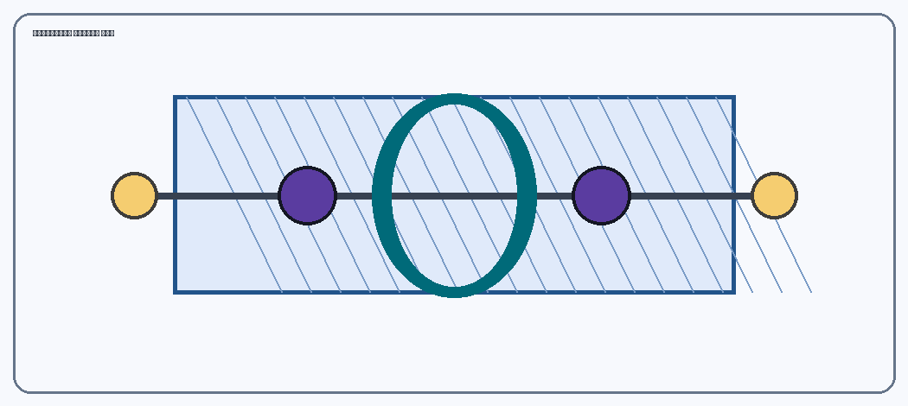
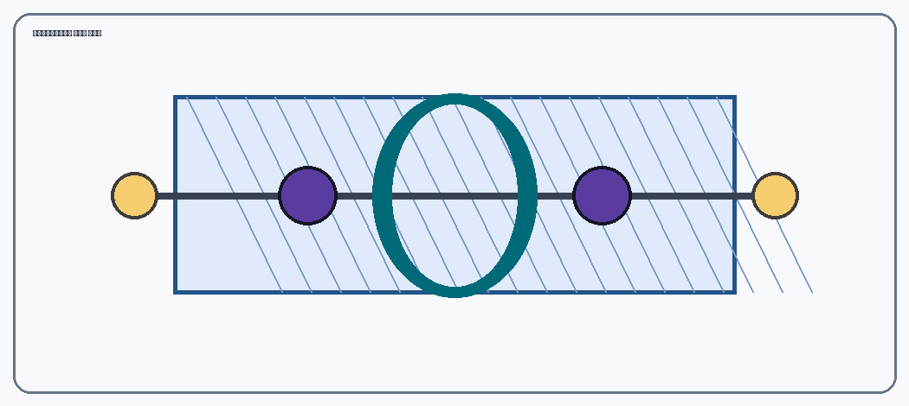

Ethyne (HC≡CH): three-dimensional structure and bonds
Model and views
With the model focused: arrow keys to rotate, + and − to zoom. You can also drag the model with a mouse or by touch.
Semantic map – parts
Select the checkbox to show or hide. “Highlight” isolates the selected part and describes its function.
End-on overlap of orbitals along the internuclear axis. Ethyne has one C–C σ bond and two C–H σ bonds.
Each carbon atom has two sp hybrid orbitals in a linear 180° arrangement. Its two unhybridised p orbitals are perpendicular to each other.
The two π bonds result from sideways overlap of the unhybridised p orbitals. Their two mutually perpendicular distributions surround the C–C axis.
The first reference plane shows one orientation of the sideways overlap of the p orbitals. The plane has distinct hatching and a bold outline.
The second reference plane is perpendicular to the first. It is additionally distinguished by opposite hatching and a different outline.
Two hydrogen atoms are located at the two ends of the linear H–C≡C–H molecule.
Auxiliary axes, markers and letters support spatial interpretation. They are not additional chemical bonds.
Static schematic views (work without JavaScript)



How are the bonds formed?
In ethyne, each C is sp-hybridised. One sp orbital of each C overlaps with an sp orbital of the other C and forms the C–C σ bond, while the second overlaps with the 1s orbital of H and forms a C–H σ bond. The two unhybridised p orbitals of each carbon overlap sideways with the corresponding orbitals of the other carbon: two π bonds result, in mutually perpendicular directions.
Accessibility: The two planes have opposite hatching and a bold outline, not only a different colour. The instructions also work with the keyboard, and every change is announced in the status field. The contrast calculation is included in the file contrast-ratios.json.